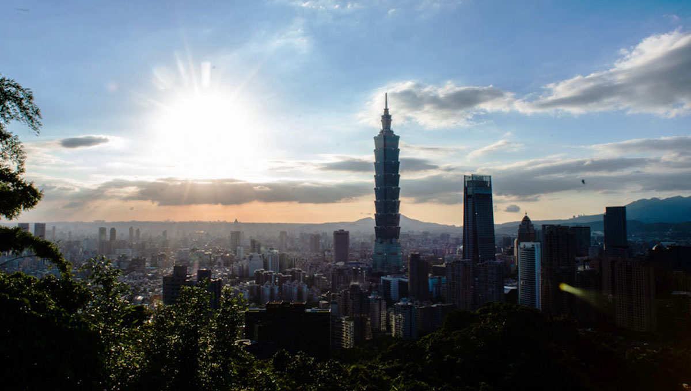

台北市大安區危老重建案
成功整合25戶老公寓所有權人，將屋齡超過50年的危險建築，透過危老重建條例，改建為現代化節能住宅大樓，大幅改善居住安全與生活品質。
25戶
整合戶數
200%+
資產價值提升
Yi Ru Sustainability Co., Ltd.
見證我們如何透過專業，將挑戰轉化為價值
我們在土地整合、都市更新與危老重建領域累積了豐富的成功經驗。以下是我們引以為傲的部分經典案例，展現了我們的專業能力與為客戶創造的實質價值。
成功整合25戶老公寓所有權人，將屋齡超過50年的危險建築，透過危老重建條例，改建為現代化節能住宅大樓，大幅改善居住安全與生活品質。
處理一塊繼承超過三代、持分人數達40人的複雜共有土地。透過訴訟分割與協調並行，最終成功整合產權，並與知名建商合作開發，讓閒置多年的土地重獲新生。
主導推動老舊社區都市更新計畫，成功劃定更新單元，並協助居民成立更新會。透過權利變換，充分保障原住戶權益，打造出兼具居住品質與商業機能的新型態社區。
關於我們成功案例的常見疑問
案例的整合時程因複雜度而異。一般而言，危老重建案因流程相對明確，可能在1-2年完成整合；而涉及多人共有、產權複雜的土地整合或都市更新案，則可能需要2-3年或更長的時間進行協調與法律程序。
保障所有權人權益是我們的核心原則。在整合過程中，我們會優先進行充分溝通與協調。若最終無法達成共識，我們將援引《都市更新條例》或相關法規，透過公正的法律程序（如權利變換、訴訟分割），確保每位所有權人都能獲得公平、法定的補償與權益分配。